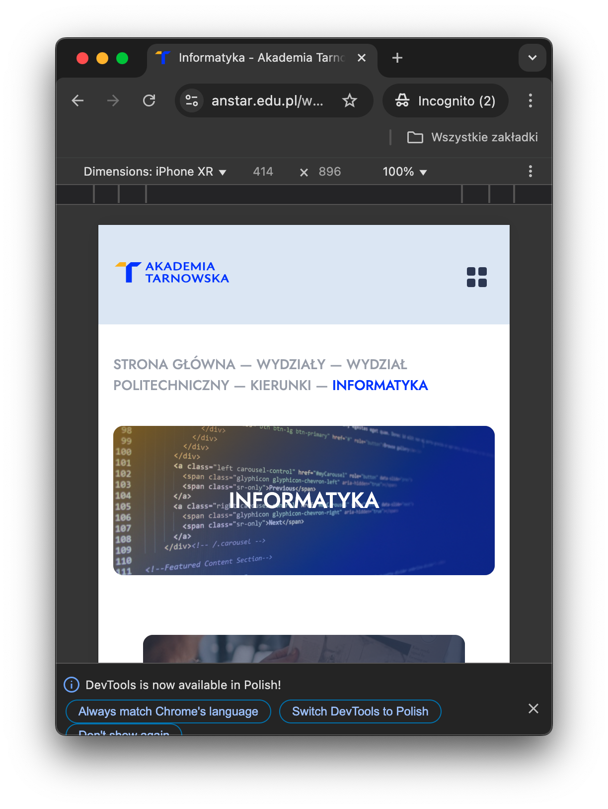

Celem projektu jest stworzenie responsywnego interfejsu użytkownika składającego się z minimum pięciu podstron, opartych o technologie HTML, CSS i JavaScript.
Projekt jest podzielony na trzy etapy.
| Etap/Termin | Opis |
|---|---|
| Mockupy. Do 15 kwietnia. | Opracowanie makiet w programie dedykowanym (np. Figma, Balsamiq) dla wersji desktop, tablet i mobile. |
| Implementacja. Do 15 maja. | Implementacja interfejsu użytkownika, wykorzystanie API, przygotowanie responsywności. |
| Dokumentacja i testy. Do 15 czerwca. | Przygotowanie dokumentacji w Markdown, testy aplikacji w przeglądarkach (Chrome, Edge, Safari, Firefox, Opera) na trzech rozdzielczościach. |
Uwaga: Niedotrzymanie terminów skutkuje obniżeniem oceny końcowej o 1 stopień.
Aplikacja powinna składać się z minimum pięciu podstron. Każda podstrona powinna zawierać menu, treść i stopkę.
| Widok/Podstrona | Wymagania funkcjonalne i wizualne |
|---|---|
| Strona główna | Powinna zawierać logo, menu nawigacyjne, stopkę oraz krótki opis. |
| Lista danych | Wyświetlanie listy elementów. Możliwość paginacji / sortowania / filtrowania wyników. Różne układy listy w zależności od ekranu (np. tabela na desktopie, karty na mobile). Dane można pobrać z publicznego API (np. JSONPlaceholder). |
| Szczegóły | Widok pojedynczego elementu (np. użytkownik, post, produkt). Dynamiczne pobieranie szczegółowych danych po kliknięciu na element listy. Przyciski Wróć i Edytuj (jeśli aplikacja to umożliwi). |
| Podstrona z 3 kolumnami |
|
| Dodatkowa podstrona | Może zawierać np. formularz kontaktowy, galerię zdjęć. |
Projekt musi być w pełni responsywny.
Aplikacja będzie testowana w przeglądarce Google Chrome na trzech wiodących rozdzielczościach.

Użyj GitHub / Bitbucket do wersjonowania kodu. Proponuje użyć GitHub Pages do hostowania projektu. Mile widziane stosowanie metodologii BEM w CSS.
Dokumentacja projektu powinna zawierać:
Wiem, że nic nie wiem
~Sokrates